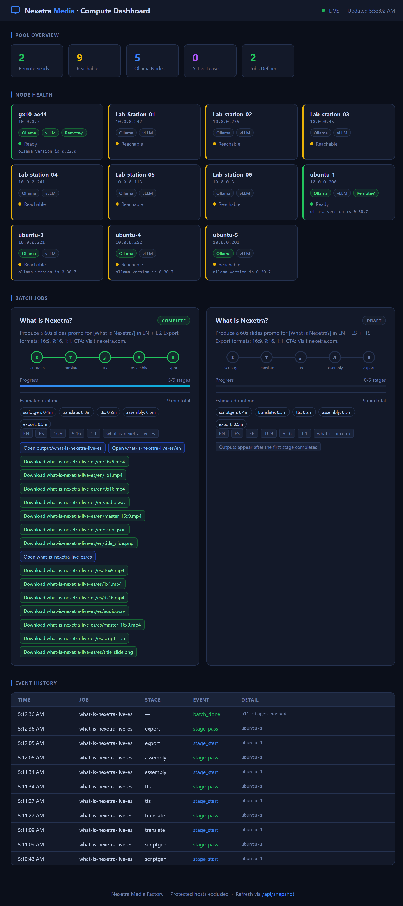
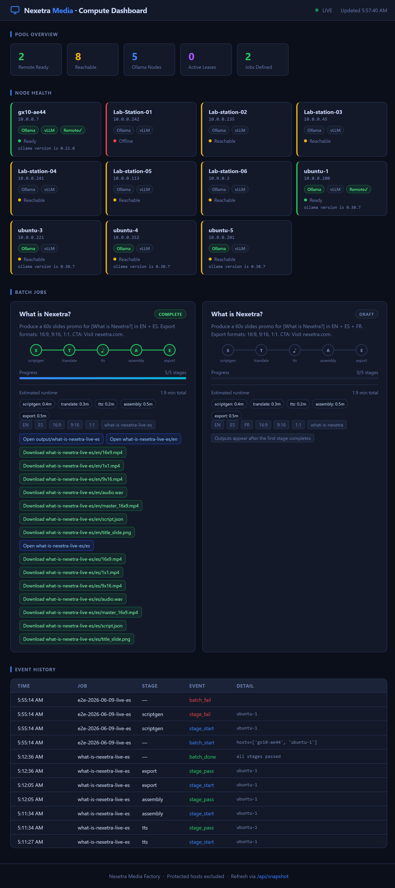

Nexetra Media E2E Test Manual (2026-06-09)
Purpose
This manual documents a complete end-to-end validation run of the Nexetra Media pipeline and dashboard, including screenshots and reproducible commands.
Test Summary
- Date: 2026-06-09
- Dashboard URL: http://10.0.0.200:7800
- Validated pipeline path: local orchestrator (
pipeline/run_job.py) with DGX-backed translation and full media export - Result: Success
Screenshot Set
docs/screenshots/e2e-2026-06-09/01-dashboard-before.pngdocs/screenshots/e2e-2026-06-09/02-dashboard-during.pngdocs/screenshots/e2e-2026-06-09/03-dashboard-after.png

Dashboard before run
Dashboard during run

Dashboard after run
Preconditions
- Activate the repo virtual environment at
nexetra-media/.venv. - Confirm dashboard service is running on
ubuntu-1. - Confirm
jobs/what-is-nexetra-live-es.jsonexists.
E2E Execution Steps
- Open a terminal in
nexetra-media. - Run the end-to-end pipeline:
.\.venv\Scripts\python pipeline\run_job.py --job jobs\what-is-nexetra-live-es.json- Confirm all stages pass:
scriptgen,translate,tts,assembly,export. - Expected final line:
Pipeline completed successfully.
Verified Stage Output (From Run)
- Script generation wrote
output/what-is-nexetra-live-es/en/script.json - Translation wrote
output/what-is-nexetra-live-es/es/script.json - TTS wrote WAV files for EN and ES
- Assembly wrote
master_16x9.mp4for EN and ES - Export wrote
16x9.mp4,9x16.mp4,1x1.mp4for EN and ES
Output Locations
- Run root:
output/what-is-nexetra-live-es - English assets:
output/what-is-nexetra-live-es/en - Spanish assets:
output/what-is-nexetra-live-es/es - Dashboard history/state:
output/job_runs.jsonl,output/compute_pool/health-latest.json,output/compute_pool/leases.json
Dashboard Validation Checklist
- Open http://10.0.0.200:7800.
- In Batch Jobs, confirm cards show stage progress, estimated runtimes, and direct output links.
- Open at least one folder link and one download link.
Notes
A separate pool-orchestrated run with a temporary new job file failed because that file did not exist on the remote execution anchor host. The final validated E2E result in this manual is from the successful full local orchestration run.